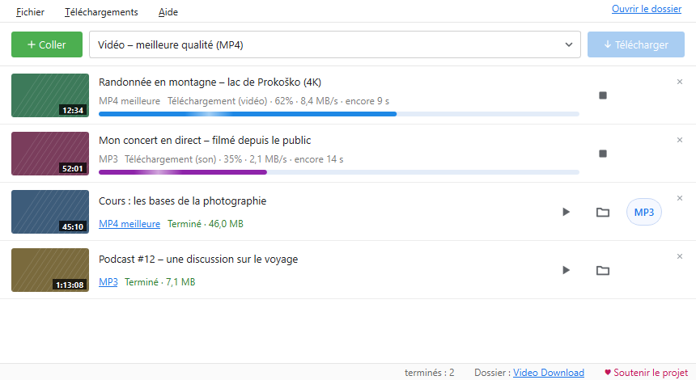

La vidéo et le son sur votre PC.
En un clic.
Une application Windows gratuite : MP4 en pleine qualité ou MP3, directement depuis le navigateur ou depuis un lien copié.
Installation : Windows peut afficher un avertissement. Le programme d'installation n'est pas encore signé numériquement, Windows peut donc afficher « Windows a protégé votre ordinateur ». Vérifiez que le fichier provient de ce site, puis cliquez sur Informations complémentaires et Exécuter quand même. Les mises à jour depuis l'application n'affichent pas cet avertissement.
L'application est destinée à vos propres vidéos, aux contenus pour lesquels vous avez l'autorisation de l'auteur et aux contenus sous licence libre. En téléchargeant, vous acceptez les Conditions d'utilisation. Les contenus protégés par DRM ne sont pas téléchargés.

Tout ce qu'il faut, rien de superflu
Une fenêtre simple, et en dessous tout ce qu'on attend d'un bon téléchargeur.
MP4 jusqu'à la meilleure qualité
Meilleure, 1080p, 720p ou 480p. L'image et le son sont réunis dans un MP4 lisible partout.
Son uniquement : MP3 ou M4A
Pour les cours, les podcasts et la musique. Un MP4 terminé devient un MP3 d'un seul bouton.
Extension pour le navigateur
Un bouton « Télécharger la vidéo en cours » et un clic droit sur n'importe quel lien ou vidéo dans Firefox, Edge et Chrome. Comment l'installer
Copiez un lien, c'est tout
L'application repère un lien copié et l'ajoute à la file. Glisser un lien dans la fenêtre fonctionne aussi.
File, playlists, plusieurs à la fois
Des playlists entières, jusqu'à 4 téléchargements simultanés, nouvelle tentative automatique si la connexion coupe.
Extraits, sous-titres, pochette
Seulement une partie d'une vidéo, de–à, les sous-titres intégrés au MP4 et la miniature comme pochette du fichier.
Thème clair et sombre
Ou comme Windows. La progression s'affiche aussi sur le bouton de la barre des tâches, et une notification arrive à la fin.
Toujours à jour
L'application cherche elle-même les nouvelles versions et met à jour la partie qui lit les sites, sans réinstallation.
Comment ça marche
De l'installation au premier fichier en moins d'une minute.
Installer
Lancez le programme d'installation. Il ne demande pas d'administrateur et n'ajoute rien d'autre à votre PC.
Ajouter un lien
Copiez un lien, cliquez sur « Coller » ou téléchargez directement depuis le navigateur avec l'extension.
Choisir et télécharger
MP4 ou MP3, puis « Télécharger ». Le fichier vous attend dans le dossier Video Download.
Nouveautés
La même liste que dans l'application (Aide → Nouveautés).
0.9.6 26.9.2026
- Les mises à jour sont signées numériquement : le programme n'installe qu'une nouvelle version signée par nous, même si quelqu'un remplace le fichier publié.
- Au premier démarrage, un court avis indiquant que le programme surveille les liens copiés, avec un bouton pour le désactiver tout de suite.
- Les fichiers temporaires de cookies restants (après un arrêt brutal) sont supprimés au démarrage suivant ; les longues listes utilisent moins de mémoire.
- La connexion avec le module du navigateur résiste mieux aux requêtes lentes ou bloquées.
0.9.5 26.9.2026
- 1080p, 720p et 480p reçoivent une marque dans le nom du fichier : une autre qualité de la même vidéo n'est plus « déjà téléchargée ».
- Deux vidéos du même titre (nom sans ID) ne se mélangent plus ; la même vidéo lancée deux fois en même temps attend la première.
- « Terminé » seulement quand le fichier existe et est lisible ; la conversion en MP3 peut toujours être arrêtée.
- La fermeture ne fige plus la fenêtre ; la mise à jour attend aussi les conversions en MP3.
0.9.4 26.9.2026
- Stabilité : le même lien peut être ajouté à nouveau juste après « Arrêter ».
- La mise à jour du lecteur de sites (yt-dlp) ne supprime plus la version utilisée ; si la nouvelle ne fonctionne pas, le programme revient à la précédente.
- Un historique ou une file endommagés ne font plus planter le programme ; si l'enregistrement échoue, le programme le signale.
- La désinstallation supprime aussi la connexion à Firefox ; la limite de vitesse n'est partagée qu'entre les téléchargements réellement en cours.
L'application est gratuite
Sans publicité, sans pistage et sans version « premium ». Si elle vous est utile, vous pouvez soutenir son développement librement. Une contribution ne débloque rien : l'application est la même pour tous.
♥ Soutenir via PayPal Scannez avec l'appareil photo du téléphone
Scannez avec l'appareil photo du téléphoneAide
Les questions les plus fréquentes. Si quelque chose ne marche pas : dans l'application, Aide → Enregistrer un rapport de problème, puis signalez le problème en le joignant. Les signalements sont publics : n'y mettez ni mots de passe ni données personnelles.
Windows affiche « Windows a protégé votre ordinateur ». Que faire ?
L'application n'a pas encore de signature numérique payante. Cliquez sur « Informations complémentaires » → « Exécuter quand même ». La somme SHA-256 du programme d'installation figure avec chaque version sur GitHub.
Une vidéo ne se télécharge soudain plus.
Les sites changent souvent. Aide → Mettre à jour le lecteur de sites (yt-dlp), puis réessayez.
Pourquoi les directs ne sont-ils pas téléchargés ?
Un direct n'a pas de fin, le téléchargement ne se terminerait donc jamais. Téléchargez-le une fois terminé, quand l'enregistrement est publié.
Qu'envoie l'application sur Internet ?
Seulement le nécessaire : le lien que vous téléchargez va vers ce site, et la recherche de mises à jour vers GitHub et PyPI. Ni compte, ni statistiques, ni pistage.